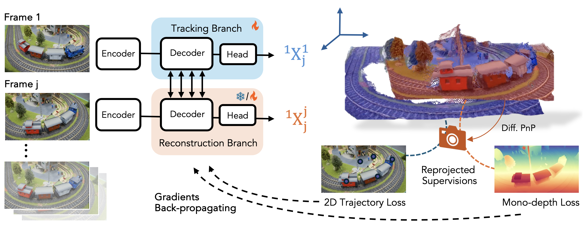
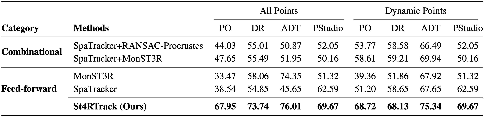
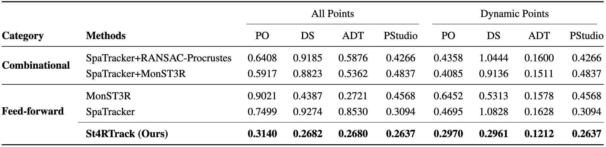
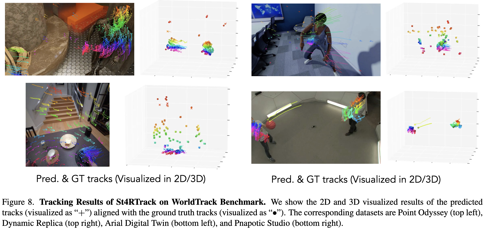
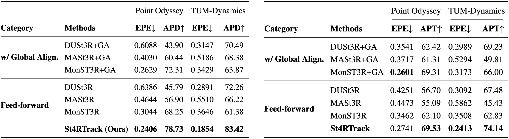
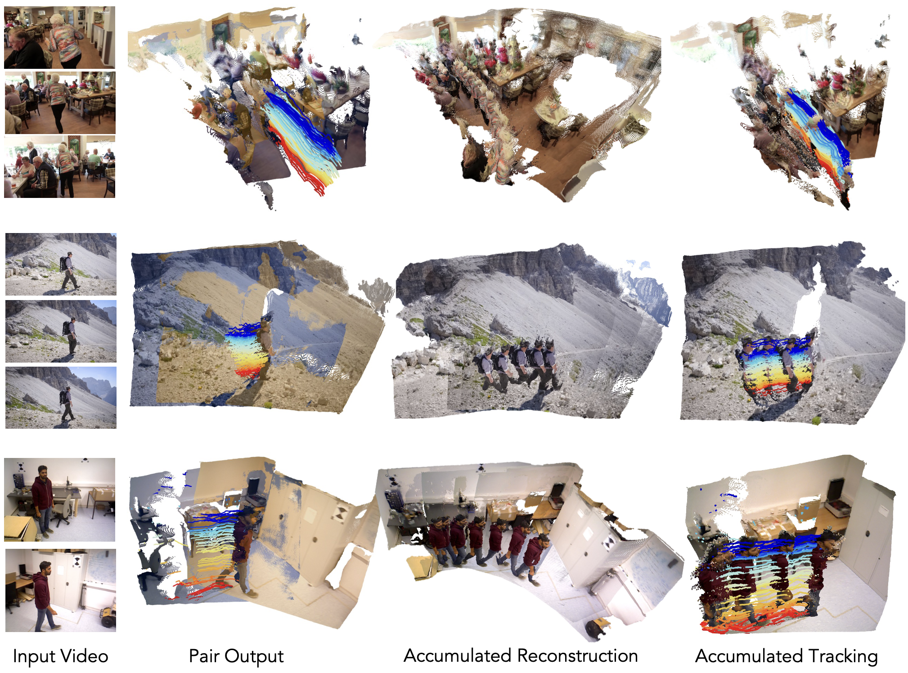

Abstract
Dynamic 3D reconstruction and point tracking in videos are typically treated as separate tasks, despite their deep connection.
We propose St4RTrack, a feed-forward framework that simultaneously reconstructs and tracks dynamic video content in a world coordinate frame from RGB inputs.
This is achieved by predicting two appropriately defined pointmaps for a pair of frames captured at different moments.
Specifically, we predict both pointmaps at the same moment, in the same world, capturing both static and dynamic scene geometry while maintaining 3D correspondences.
Chaining these predictions through the video sequence with respect to a reference frame naturally computes long-range correspondences, effectively combining 3D reconstruction with 3D tracking.
Unlike prior methods that rely heavily on 4D ground truth supervision, we employ a novel adaptation scheme based on a reprojection loss.
We establish a new extensive benchmark for world-frame reconstruction and tracking, demonstrating the effectiveness and efficiency of our unified, data-driven framework.
Adapt to Any Video without 4D Label
We train our network on three synthetic datasets and found that training on small-scale, sparse labeled, and unrealistic synthetic data is sufficient for our network to learn the newly proposed representation.
However, synthetic training alone limits generalization to real-world scenes with complex motion and geometry.
We address this by leveraging the inherent geometric and motion in the representation to adapt to any video without 4D labels, using only reprojected supervision signals like 2D trajectories and monocular depth.

Overview of St4RTrack
Given frame $1$ and frame $j$ as input, the tracking branch outputs
${}^{\color{rgb(204,153,0)}{1}}\text{X}^{\color{rgb(180,80,180)}{1}}_{\color{rgb(80,200,80)}{j}}$,
the pointmap that corresponds to $\color{rgb(180,80,180)}{\text{observed content}}$ of the first frame at $\color{rgb(80,200,80)}{\text{timestep}}$ $j$ in its own $\color{rgb(204,153,0)}{\text{camera coordinate}}$ (i.e. world coordinate);
the reconstruction branch outputs ${}^{\color{rgb(204,153,0)}{1}}\text{X}^{\color{rgb(180,80,180)}{j}}_{\color{rgb(80,200,80)}{j}}$, the pointmap of the $\color{rgb(180,80,180)}{\text{content}}$ in frame $j$ at its own $\color{rgb(80,200,80)}{\text{timestep}}$ in the world $\color{rgb(204,153,0)}{\text{coordinate}}$.
To adapt to new videos without any 4D labels, the camera is computed via differentiable PnP from the reconstruction pointmap, enabling reprojected supervision signals (e.g., 2D trajectories and monocular depth). We finetune both branches during training with synthetic data, and when adapting to a new video, only the tracking branch is fine-tuned using these reprojected supervision signals.
Results - World Coordinate Tracking
Since there is no previous work on world coordinate tracking, we first propose a new benchmark, WorldTrack, for evaluation.
Qualitatively, St4RTrack achieves best APD (upper) and ATE (lower) on WorldTrack, compared with combinational methods.


Qualitatively, St4RTrack can handle both camera and scene motion, in a feed-forward manner.

Results - World Coordinate Reconstruction
Quantitatively, the reconstruction results are competitive with task-specific methods.

world coordinate reconstruction results under median-scale alignment (left) and sim(3) alignment (right)
Qualitatively, St4RTrack achieves reasonable results as a pair-wise feed-forward framework.


world coordinate reconstruction results on PointOdyssey (Top) and TUM-Dynamics (Bottom)
Results - Joint 4D Reconstruction and Tracking
We show below the pair output of a single frame, accumulated reconstruction, and accumulated tracking results on DAVIS.

fully feed-forward inference results of St4RTrack


test-time adaptation results of St4RTrack
Limitations
Despite St4RTrack's promising approach to unified dynamic scene understanding, several limitations remain:
- Per-frame processing: Issues like scale misalignment, large camera movements, and occlusions are not fully resolved. Incorporating temporal attention across multiple frames could capture richer motion priors.
- Training data limitations: The pretraining datasets lack diversity and realism in both geometry and motion, requiring test-time adaptation for out-of-distribution scenarios.
- Complex motion handling: The current approach struggles with highly complex motions, suggesting that expanding the training dataset is a key direction for future work.
We believe large-scale pretraining, when compute permits, could boost St4RTrack's performance for complex, in-the-wild videos.
Acknowledgements:
We borrow this template from SD+DINO, which is originally from DreamBooth.
The interactive 4D visualization is powered by Viser.
We would like to thank Aleksander Holynski, Yifei Zhang, Chung Min Kim, Brent Yi, and Zehao Yu for helpful discussions.
We sincerely thank Brent Yi for his support in setting up the online visualization.
We especially thank Aleksander Holynski for his guidance and feedback.